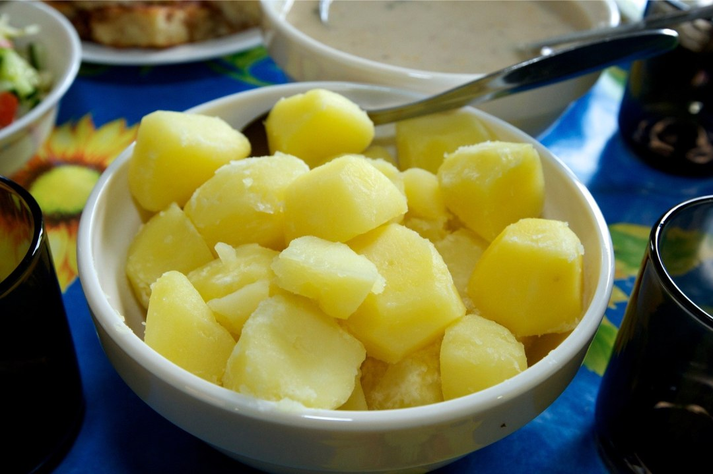

Keedetud kartulid
Koostis
Kogus
Kartul
1kg
Vesi
Piisavalt
Sool
maitse järgi
Võta suur pott ja pane kooritud kartulid potti,
vett lisa niipalju, et kartulid vee alla jäävad
lisa soola vastavalt maitse järgi
Keeda kuni kartulid on pehmed.
Kalla vesi ära

Retsept Nami-Namis